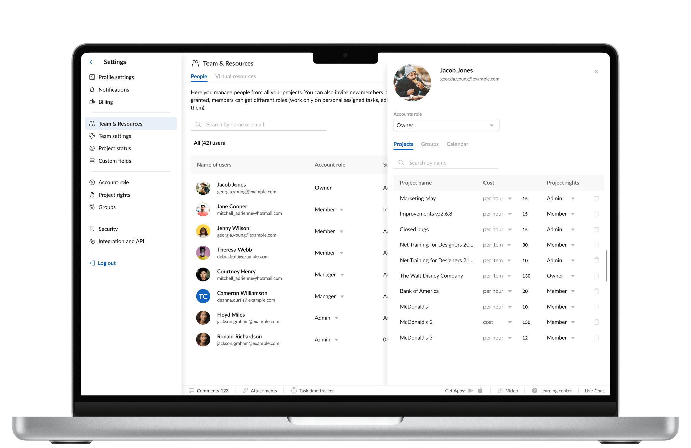
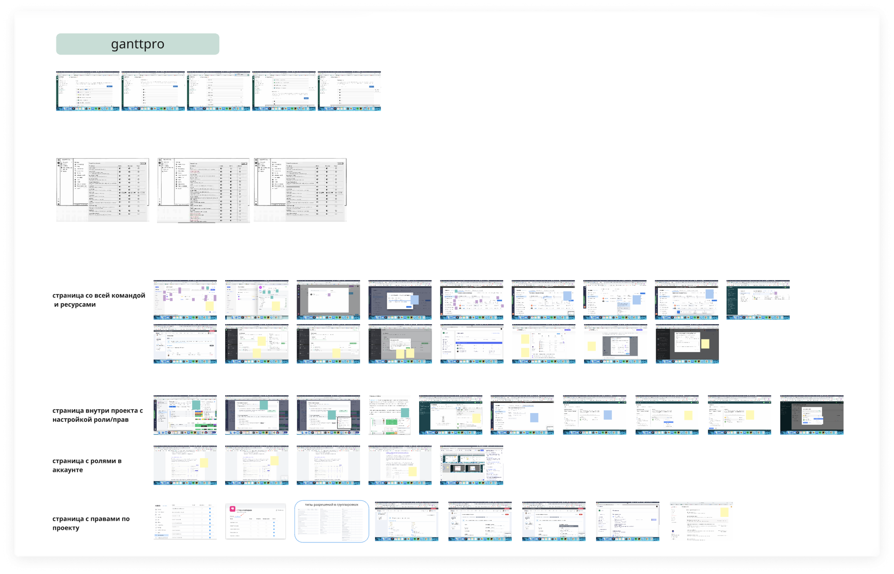
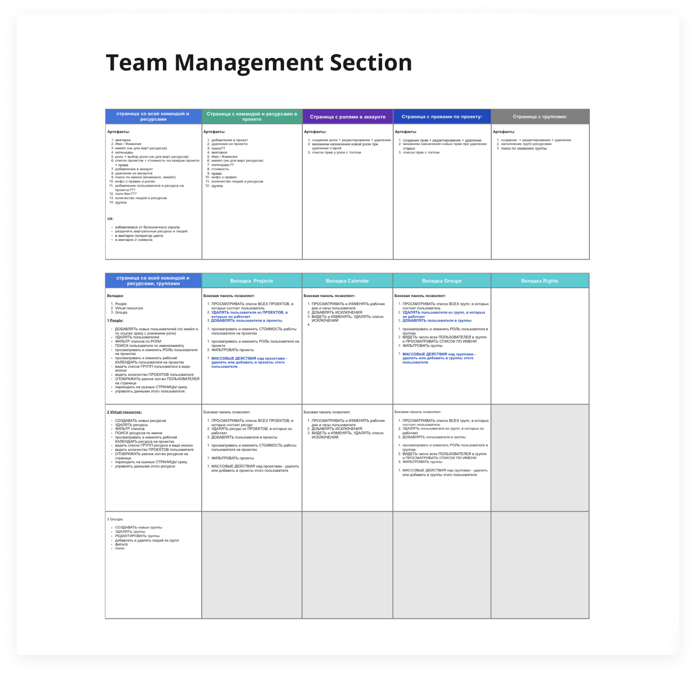
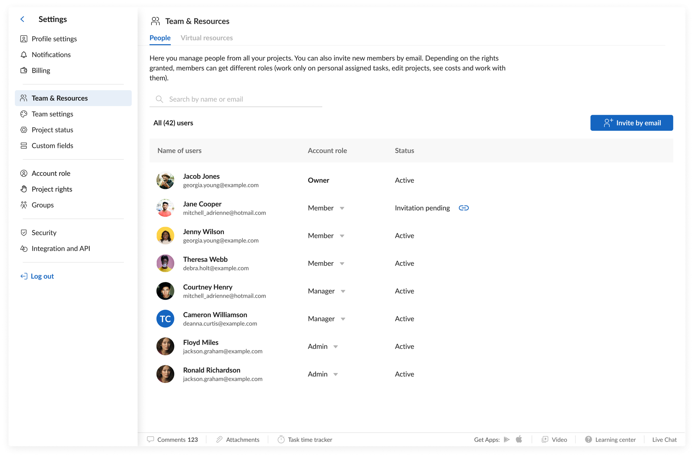
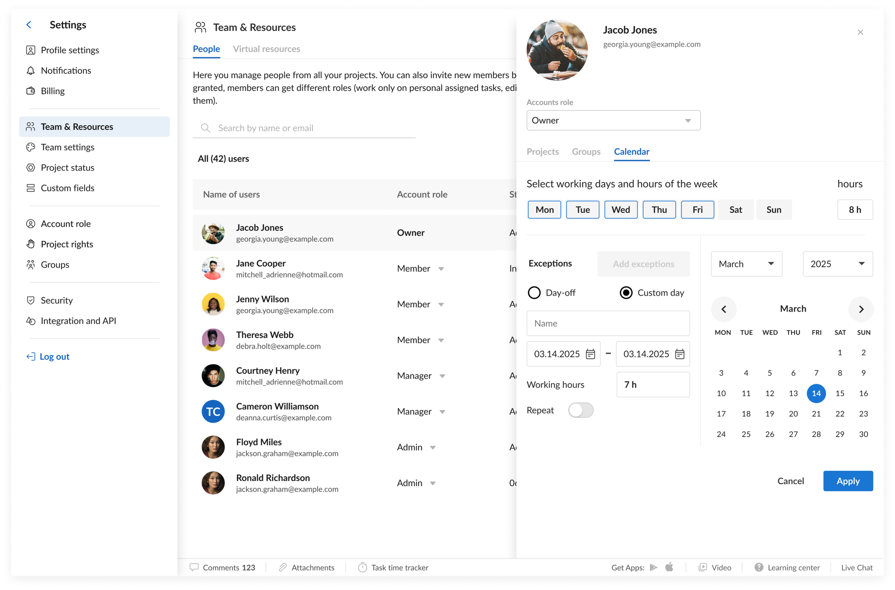
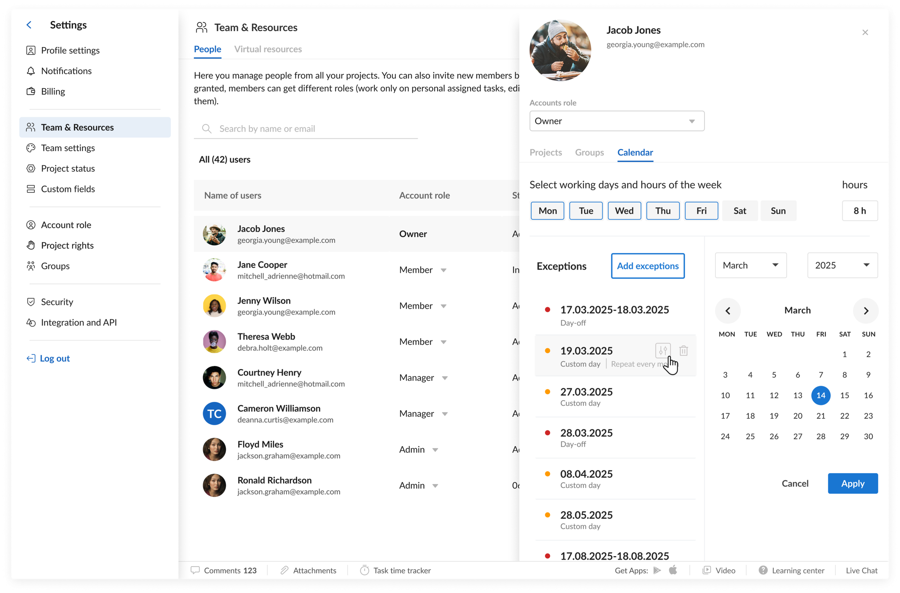

When a team list becomes an operating system
GanttPRO's Team & Resources section is where an account owner runs their whole team across every project: each person's account role, their rights on each project, what they cost, and the groups they belong to. It also manages "virtual resources" — non-user placeholders like a contractor slot, a server, or equipment that carry tasks and budget.
It had quietly outgrown its own design. Everything opened inline: click a person and their projects unfolded beneath them; click the next and the page kept growing into one endless accordion. Answering a basic question — which projects is this person on, what's their role, what do they cost — meant scrolling and hunting. As accounts grew to dozens of projects and people, it stopped being manageable.



From one flat list to a system you can manage
I treated it as a system, not a screen — mapping every surface it touched (the account-wide team, the team inside a project, account roles, project rights, and groups) and defining what each has to let a manager actually do. I ran several rounds of interviews with users and project managers, walking them through concepts and iterating on their feedback.
The old page unfolded everything inline, so it never stopped growing. I replaced the accordion with a compact, scannable list of people, and moved each person's detail into a focused panel you open on demand.
Each person became an expandable card: every project they're on, each with its cost and project rights, plus their account role, groups, and working calendar — the whole picture in one place instead of scattered across the app.
I structured the two-level permission model — account roles (Owner, Admin, Member) and per-project rights (Editor, Advanced Member, Commenter, and more) — so managers change the right control at the right level without guessing.
A section teams can grow with
The redesigned Team & Resources shipped in GanttPRO's 2022 release, with a clearer home in settings and expanded management. It became the standard way accounts handle their people, roles, rights, and cost across projects — replacing an endless accordion with a structure that scales as a team grows.


